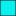

<!doctype html>
<html lang="en">
    <head>
        <meta charset="utf-8">
        <meta http-equiv="X-UA-Compatible" content="IE=edge">
        <meta name="viewport" content="initial-scale=1,user-scalable=no,maximum-scale=1,width=device-width">
        <meta name="mobile-web-app-capable" content="yes">
        <meta name="apple-mobile-web-app-capable" content="yes">
        <link rel="stylesheet" href="css/leaflet.css">
        <link rel="stylesheet" href="css/qgis2web.css"><link rel="stylesheet" href="css/fontawesome-all.min.css">
        <style>
        html, body, #map {
            width: 100%;
            height: 100%;
            padding: 0;
            margin: 0;
        }
        </style>
        <title></title>
    </head>
    <body>
        <div id="map">
        </div>
        <script src="js/qgis2web_expressions.js"></script>
        <script src="js/leaflet.js"></script>
        <script src="js/leaflet.rotatedMarker.js"></script>
        <script src="js/leaflet.pattern.js"></script>
        <script src="js/leaflet-hash.js"></script>
        <script src="js/Autolinker.min.js"></script>
        <script src="js/rbush.min.js"></script>
        <script src="js/labelgun.min.js"></script>
        <script src="js/labels.js"></script>
        <script src="data/_0.js"></script>
        <script src="data/_1.js"></script>
        <script src="data/_2.js"></script>
        <script src="data/_3.js"></script>
        <script src="data/_4.js"></script>
        <script src="data/_5.js"></script>
        <script src="data/_6.js"></script>
        <script src="data/_7.js"></script>
        <script src="data/_8.js"></script>
        <script src="data/_9.js"></script>
        <script>
        var map = L.map('map', {
            zoomControl:true, maxZoom:5, minZoom:4
        })
        var hash = new L.Hash(map);
        map.attributionControl.setPrefix('<a href="https://github.com/tomchadwin/qgis2web" target="_blank">qgis2web</a> &middot; <a href="https://leafletjs.com" title="A JS library for interactive maps">Leaflet</a> &middot; <a href="https://qgis.org">QGIS</a>');
        var autolinker = new Autolinker({truncate: {length: 30, location: 'smart'}});
        var bounds_group = new L.featureGroup([]);
        function setBounds() {
            if (bounds_group.getLayers().length) {
                map.fitBounds(bounds_group.getBounds());
            }
        }
        function pop__0(feature, layer) {
            var popupContent = '<table>\
                    <tr>\
                        <td colspan="2">' + (feature.properties['районы'] !== null ? autolinker.link(feature.properties['районы'].toLocaleString()) : '') + '</td>\
                    </tr>\
                    <tr>\
                        <th scope="row">Доля ООПТ от общей площади субъекта, %</th>\
                        <td>' + (feature.properties['оопт'] !== null ? autolinker.link(feature.properties['оопт'].toLocaleString()) : '') + '</td>\
                    </tr>\
                </table>';
            layer.bindPopup(popupContent, {maxHeight: 400});
        }

        function style__0_0(feature) {
            if (feature.properties['оопт'] >= 0.000000 && feature.properties['оопт'] <= 0.100000 ) {
                return {
                pane: 'pane__0',
                opacity: 1,
                color: 'rgba(35,35,35,1.0)',
                dashArray: '',
                lineCap: 'butt',
                lineJoin: 'miter',
                weight: 1.0, 
                fill: true,
                fillOpacity: 1,
                fillColor: 'rgba(255,245,235,1.0)',
                interactive: true,
            }
            }
            if (feature.properties['оопт'] >= 0.100000 && feature.properties['оопт'] <= 1.000000 ) {
                return {
                pane: 'pane__0',
                opacity: 1,
                color: 'rgba(35,35,35,1.0)',
                dashArray: '',
                lineCap: 'butt',
                lineJoin: 'miter',
                weight: 1.0, 
                fill: true,
                fillOpacity: 1,
                fillColor: 'rgba(253,189,131,1.0)',
                interactive: true,
            }
            }
            if (feature.properties['оопт'] >= 1.000000 && feature.properties['оопт'] <= 2.000000 ) {
                return {
                pane: 'pane__0',
                opacity: 1,
                color: 'rgba(35,35,35,1.0)',
                dashArray: '',
                lineCap: 'butt',
                lineJoin: 'miter',
                weight: 1.0, 
                fill: true,
                fillOpacity: 1,
                fillColor: 'rgba(238,101,16,1.0)',
                interactive: true,
            }
            }
            if (feature.properties['оопт'] >= 2.000000 && feature.properties['оопт'] <= 3.000000 ) {
                return {
                pane: 'pane__0',
                opacity: 1,
                color: 'rgba(35,35,35,1.0)',
                dashArray: '',
                lineCap: 'butt',
                lineJoin: 'miter',
                weight: 1.0, 
                fill: true,
                fillOpacity: 1,
                fillColor: 'rgba(127,39,4,1.0)',
                interactive: true,
            }
            }
        }
        map.createPane('pane__0');
        map.getPane('pane__0').style.zIndex = 400;
        map.getPane('pane__0').style['mix-blend-mode'] = 'normal';
        var layer__0 = new L.geoJson(json__0, {
            attribution: '',
            interactive: true,
            dataVar: 'json__0',
            layerName: 'layer__0',
            pane: 'pane__0',
            onEachFeature: pop__0,
            style: style__0_0,
        });
        bounds_group.addLayer(layer__0);
        map.addLayer(layer__0);
        function pop__1(feature, layer) {
            var popupContent = '<table>\
                    <tr>\
                        <th scope="row">ООПТ</th>\
                        <td>' + (feature.properties['ООПТ'] !== null ? autolinker.link(feature.properties['ООПТ'].toLocaleString()) : '') + '</td>\
                    </tr>\
                    <tr>\
                        <th scope="row">Площадь, га</th>\
                        <td>' + (feature.properties['Площадь'] !== null ? autolinker.link(feature.properties['Площадь'].toLocaleString()) : '') + '</td>\
                    </tr>\
                    <tr>\
                        <th scope="row">Животные</th>\
                        <td>' + (feature.properties['Животные'] !== null ? autolinker.link(feature.properties['Животные'].toLocaleString()) : '') + '</td>\
                    </tr>\
                    <tr>\
                        <th scope="row">Растения</th>\
                        <td>' + (feature.properties['Растения'] !== null ? autolinker.link(feature.properties['Растения'].toLocaleString()) : '') + '</td>\
                    </tr>\
                    <tr>\
                        <td colspan="2">' + (feature.properties['image'] !== null ? '' : '') + '</td>\
                    </tr>\
                </table>';
            layer.bindPopup(popupContent, {maxHeight: 400});
        }

        function style__1_0() {
            return {
                pane: 'pane__1',
                opacity: 1,
                color: 'rgba(0,0,0,1.0)',
                dashArray: '',
                lineCap: 'butt',
                lineJoin: 'miter',
                weight: 1.0, 
                fill: true,
                fillOpacity: 1,
                fillColor: 'rgba(6,240,240,1.0)',
                interactive: true,
            }
        }
        map.createPane('pane__1');
        map.getPane('pane__1').style.zIndex = 401;
        map.getPane('pane__1').style['mix-blend-mode'] = 'normal';
        var layer__1 = new L.geoJson(json__1, {
            attribution: '',
            interactive: true,
            dataVar: 'json__1',
            layerName: 'layer__1',
            pane: 'pane__1',
            onEachFeature: pop__1,
            style: style__1_0,
        });
        bounds_group.addLayer(layer__1);
        map.addLayer(layer__1);
        function pop__2(feature, layer) {
            var popupContent = '<table>\
                    <tr>\
                        <td colspan="2">' + (feature.properties['id'] !== null ? autolinker.link(feature.properties['id'].toLocaleString()) : '') + '</td>\
                    </tr>\
                </table>';
            layer.bindPopup(popupContent, {maxHeight: 400});
        }

        function style__2_0() {
            return {
                pane: 'pane__2',
                opacity: 1,
                color: 'rgba(38,89,128,1.0)',
                dashArray: '',
                lineCap: 'butt',
                lineJoin: 'miter',
                weight: 1.0, 
                fill: true,
                fillOpacity: 1,
                fillColor: 'rgba(55,126,184,1.0)',
                interactive: false,
            }
        }
        map.createPane('pane__2');
        map.getPane('pane__2').style.zIndex = 402;
        map.getPane('pane__2').style['mix-blend-mode'] = 'normal';
        var layer__2 = new L.geoJson(json__2, {
            attribution: '',
            interactive: false,
            dataVar: 'json__2',
            layerName: 'layer__2',
            pane: 'pane__2',
            onEachFeature: pop__2,
            style: style__2_0,
        });
        bounds_group.addLayer(layer__2);
        map.addLayer(layer__2);
        function pop__3(feature, layer) {
        }

        function style__3_0() {
            return {
                pane: 'pane__3',
                opacity: 1,
                color: 'rgba(236,14,14,1.0)',
                dashArray: '',
                lineCap: 'square',
                lineJoin: 'bevel',
                weight: 1.0,
                fillOpacity: 0,
                interactive: false,
            }
        }
        map.createPane('pane__3');
        map.getPane('pane__3').style.zIndex = 403;
        map.getPane('pane__3').style['mix-blend-mode'] = 'normal';
        var layer__3 = new L.geoJson(json__3, {
            attribution: '',
            interactive: false,
            dataVar: 'json__3',
            layerName: 'layer__3',
            pane: 'pane__3',
            onEachFeature: pop__3,
            style: style__3_0,
        });
        bounds_group.addLayer(layer__3);
        map.addLayer(layer__3);
        function pop__4(feature, layer) {
        }

        function style__4_0() {
            return {
                pane: 'pane__4',
                opacity: 1,
                color: 'rgba(241,21,17,1.0)',
                dashArray: '',
                lineCap: 'square',
                lineJoin: 'bevel',
                weight: 1.0,
                fillOpacity: 0,
                interactive: false,
            }
        }
        map.createPane('pane__4');
        map.getPane('pane__4').style.zIndex = 404;
        map.getPane('pane__4').style['mix-blend-mode'] = 'normal';
        var layer__4 = new L.geoJson(json__4, {
            attribution: '',
            interactive: false,
            dataVar: 'json__4',
            layerName: 'layer__4',
            pane: 'pane__4',
            onEachFeature: pop__4,
            style: style__4_0,
        });
        bounds_group.addLayer(layer__4);
        map.addLayer(layer__4);
        function pop__5(feature, layer) {
        }

        function style__5_0() {
            return {
                pane: 'pane__5',
                opacity: 1,
                color: 'rgba(239,23,27,1.0)',
                dashArray: '',
                lineCap: 'square',
                lineJoin: 'bevel',
                weight: 1.0,
                fillOpacity: 0,
                interactive: false,
            }
        }
        map.createPane('pane__5');
        map.getPane('pane__5').style.zIndex = 405;
        map.getPane('pane__5').style['mix-blend-mode'] = 'normal';
        var layer__5 = new L.geoJson(json__5, {
            attribution: '',
            interactive: false,
            dataVar: 'json__5',
            layerName: 'layer__5',
            pane: 'pane__5',
            onEachFeature: pop__5,
            style: style__5_0,
        });
        bounds_group.addLayer(layer__5);
        map.addLayer(layer__5);
        function pop__6(feature, layer) {
        }

        function style__6_0() {
            return {
                pane: 'pane__6',
                opacity: 1,
                color: 'rgba(234,16,19,1.0)',
                dashArray: '',
                lineCap: 'square',
                lineJoin: 'bevel',
                weight: 1.0,
                fillOpacity: 0,
                interactive: false,
            }
        }
        map.createPane('pane__6');
        map.getPane('pane__6').style.zIndex = 406;
        map.getPane('pane__6').style['mix-blend-mode'] = 'normal';
        var layer__6 = new L.geoJson(json__6, {
            attribution: '',
            interactive: false,
            dataVar: 'json__6',
            layerName: 'layer__6',
            pane: 'pane__6',
            onEachFeature: pop__6,
            style: style__6_0,
        });
        bounds_group.addLayer(layer__6);
        map.addLayer(layer__6);
        function pop__7(feature, layer) {
        }

        function style__7_0() {
            return {
                pane: 'pane__7',
                opacity: 1,
                color: 'rgba(238,20,23,1.0)',
                dashArray: '',
                lineCap: 'square',
                lineJoin: 'bevel',
                weight: 1.0,
                fillOpacity: 0,
                interactive: false,
            }
        }
        map.createPane('pane__7');
        map.getPane('pane__7').style.zIndex = 407;
        map.getPane('pane__7').style['mix-blend-mode'] = 'normal';
        var layer__7 = new L.geoJson(json__7, {
            attribution: '',
            interactive: false,
            dataVar: 'json__7',
            layerName: 'layer__7',
            pane: 'pane__7',
            onEachFeature: pop__7,
            style: style__7_0,
        });
        bounds_group.addLayer(layer__7);
        map.addLayer(layer__7);
        function pop__8(feature, layer) {
        }

        function style__8_0() {
            return {
                pane: 'pane__8',
                opacity: 1,
                color: 'rgba(236,17,31,1.0)',
                dashArray: '',
                lineCap: 'square',
                lineJoin: 'bevel',
                weight: 1.0,
                fillOpacity: 0,
                interactive: false,
            }
        }
        map.createPane('pane__8');
        map.getPane('pane__8').style.zIndex = 408;
        map.getPane('pane__8').style['mix-blend-mode'] = 'normal';
        var layer__8 = new L.geoJson(json__8, {
            attribution: '',
            interactive: false,
            dataVar: 'json__8',
            layerName: 'layer__8',
            pane: 'pane__8',
            onEachFeature: pop__8,
            style: style__8_0,
        });
        bounds_group.addLayer(layer__8);
        map.addLayer(layer__8);
        function pop__9(feature, layer) {
        }

        function style__9_0() {
            return {
                pane: 'pane__9',
                opacity: 1,
                color: 'rgba(238,20,16,1.0)',
                dashArray: '',
                lineCap: 'square',
                lineJoin: 'bevel',
                weight: 1.0,
                fillOpacity: 0,
                interactive: false,
            }
        }
        map.createPane('pane__9');
        map.getPane('pane__9').style.zIndex = 409;
        map.getPane('pane__9').style['mix-blend-mode'] = 'normal';
        var layer__9 = new L.geoJson(json__9, {
            attribution: '',
            interactive: false,
            dataVar: 'json__9',
            layerName: 'layer__9',
            pane: 'pane__9',
            onEachFeature: pop__9,
            style: style__9_0,
        });
        bounds_group.addLayer(layer__9);
        map.addLayer(layer__9);
        var baseMaps = {};
        L.control.layers(baseMaps,{' Особо охраняемые природные территории': layer__1,'Доля ООПТ от общей площади субъекта, %<br /><table><tr><td style="text-align: center;"></td><td>менее 0.1</td></tr><tr><td style="text-align: center;"></td><td>0.1 - 1.0</td></tr><tr><td style="text-align: center;"></td><td>1.0 - 2.0</td></tr><tr><td style="text-align: center;"></td><td>2.0 и более</td></tr></table>': layer__0,},{collapsed:false}).addTo(map);
        setBounds();
        var i = 0;
        layer__0.eachLayer(function(layer) {
            var context = {
                feature: layer.feature,
                variables: {}
            };
            layer.bindTooltip((layer.feature.properties['районы'] !== null?String('<div style="color: #000000; font-size: 10pt; font-family: \'MS Shell Dlg 2\', sans-serif;">' + layer.feature.properties['районы']) + '</div>':''), {permanent: true, offset: [-0, -16], className: 'css__0'});
            labels.push(layer);
            totalMarkers += 1;
              layer.added = true;
              addLabel(layer, i);
              i++;
        });
        resetLabels([layer__0,layer__1]);
        map.on("zoomend", function(){
            resetLabels([layer__0,layer__1]);
        });
        map.on("layeradd", function(){
            resetLabels([layer__0,layer__1]);
        });
        map.on("layerremove", function(){
            resetLabels([layer__0,layer__1]);
        });
        </script>
    </body>
</html>
